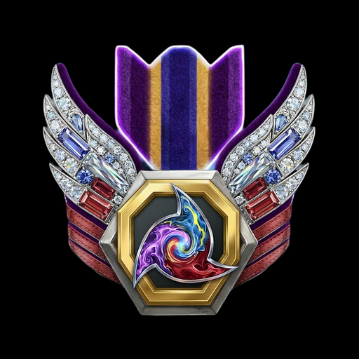
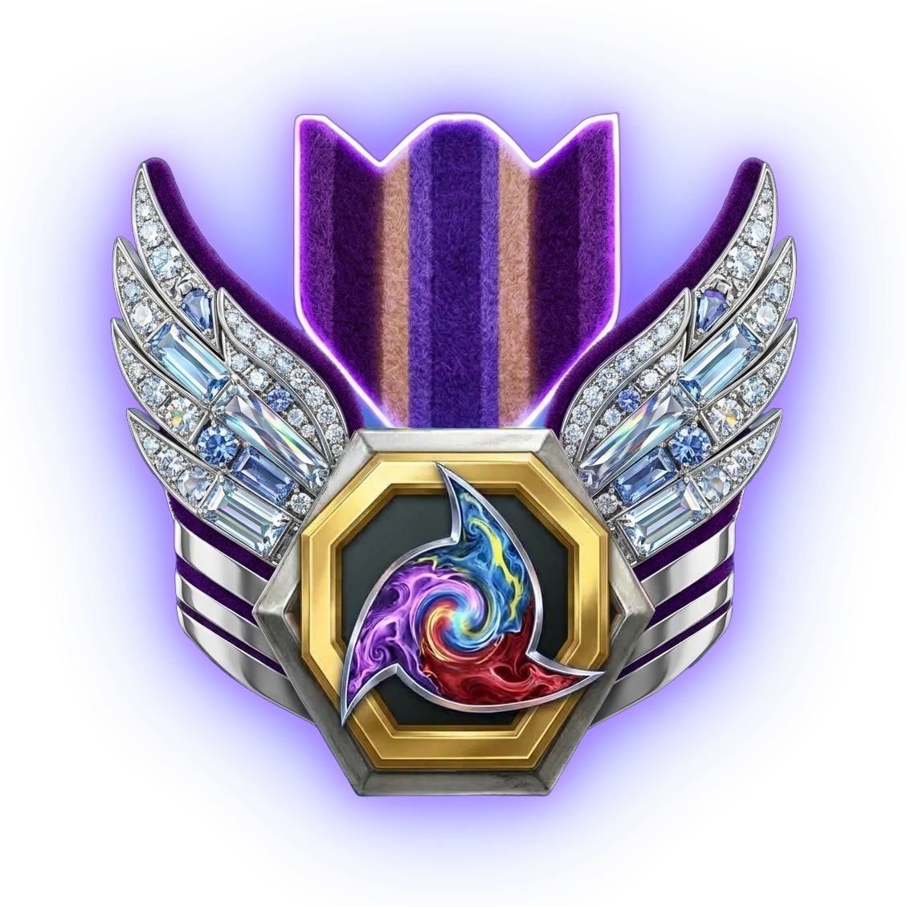

×
🔍 Analyze
🔗
<
🎲
>
🎥
Name field locked: the comparison shows up to 6 players at once. Remove a name to add another.
🆕
Fetch fresh data
📖 What the columns mean
❓📖❓
🇬🇧 English
🇯🇵 日本語
🇷🇺 Русский
🇩🇪 Deutsch
🇫🇷 Français
🇨🇳 中文
🇪🇸 Español
🗑️
🖼️
🔊
☀️
Connecting…
✕
Analyzing…
0%
✨ Stats
🏅 Positions
Loading positions…
💀
🎯
🎚️
Auto
▶️ Press Analyze
dashed = predicted from play style,
not real fights
📊
📋 All players